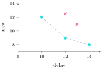

; since a gate's delay depends on the load it drives, which is unknown bottom-up, each node keeps a set of solutions per possible load, or the area–delay Pareto front.
; since a gate's delay depends on the load it drives, which is unknown bottom-up, each node keeps a set of solutions per possible load, or the area–delay Pareto front.Method
Without loads (fixed delay per gate), the recursion is exact and optimal on trees:
With load-dependent delay , the load seen by is the input capacitance of the gate chosen above it, not yet known. Remedy: compute at each node the best solution for each possible load value (a small set of library input capacitances), then choose top-down once the load is fixed.
is the input capacitance of the gate chosen above it, not yet known. Remedy: compute at each node the best solution for each possible load value (a small set of library input capacitances), then choose top-down once the load is fixed.
Keeping several (area, delay) pairs per node — the Pareto front — allows trading: the minimum-delay cover only on critical paths (negative slack), the minimum-area cover elsewhere.
Example
A node can be covered with delay 10, area 12, or delay 12, area 9 (same output arrival 12 when the input arrives late), or delay 13, area 11. The second dominates the third; both the first and second are on the Pareto front, and the choice depends on the slack.
Picture

Dots: Pareto-optimal covers; crosses: dominated ones, discarded.
Intuition
For speed the cost of a cover is its slowest branch, not the sum of its parts; and how fast a gate is depends on who it drives.
Pitfall
Minimising delay everywhere bloats the area for nothing: only paths with negative slack need the fast cover.